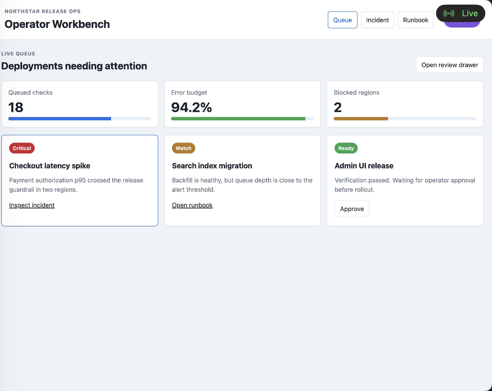

Reproducible demos
Operator Workbench media pipeline
Demo screenshots and recordings are generated from the realistic local E2E fixture, not private user sessions. Generated binaries stay out of the repository until explicitly curated.

Primary dashboard screenshot
Produced by RUN_REALISTIC_E2E_SMOKE=1 make smoke-realistic-e2e
and promoted by make demo-media. The published crop removes
local paths, ports, and session identifiers from the raw artifact.
recording.mp4
Workflow recording
Planned capture for navigation, validation, scrolling, expanded view recording, and exported MP4 review.
Local capture commands
RUN_REALISTIC_E2E_SMOKE=1 SMOKE_ARTIFACT_DIR=dist/realistic-e2e-artifacts make smoke-realistic-e2e
DEMO_MEDIA_FROM_EXISTING=1 make demo-mediaSee the full plan in docs/realistic-e2e-media-plan.md .